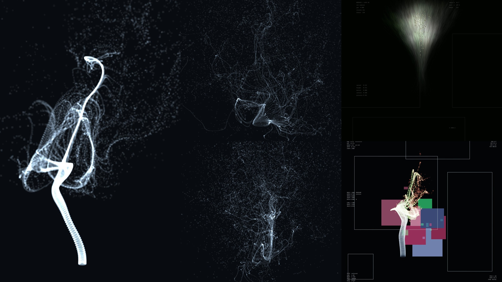
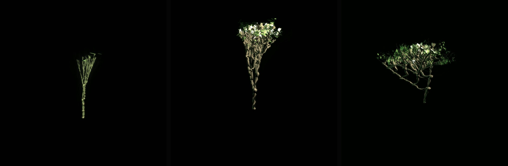
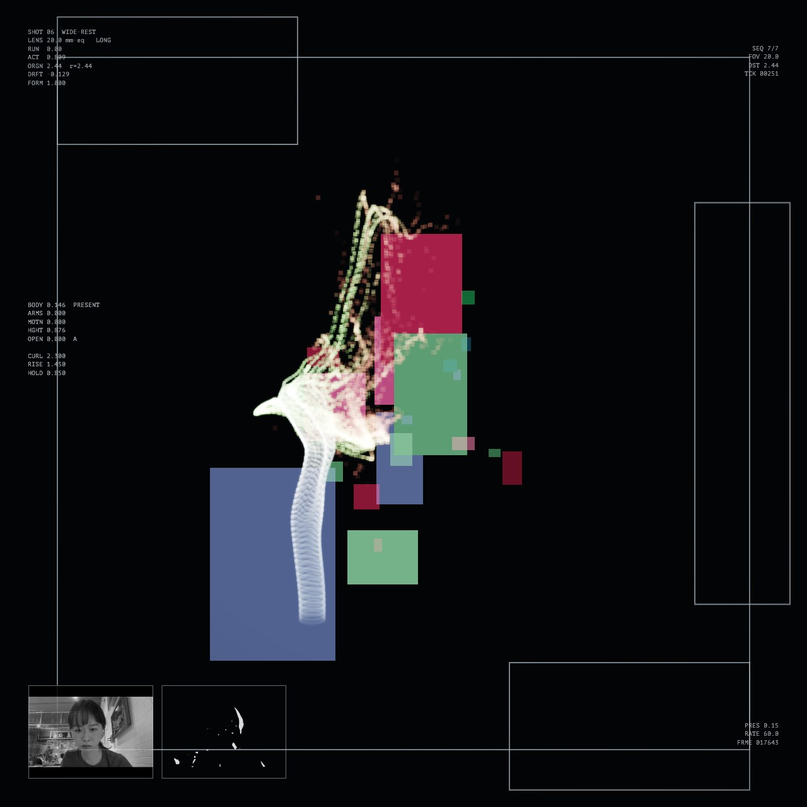

Sketches — 2025
小品Sketches
短篇練習與原型。Short studies and prototypes.
Botanic
依觀者姿勢生長的生成植物。



Abandon
Exhibition Setup System
開始畫面搭配旋轉的展場 3D 模型，兩個設計方向。
Sketches — 2025
短篇練習與原型。Short studies and prototypes.
依觀者姿勢生長的生成植物。



開始畫面搭配旋轉的展場 3D 模型，兩個設計方向。